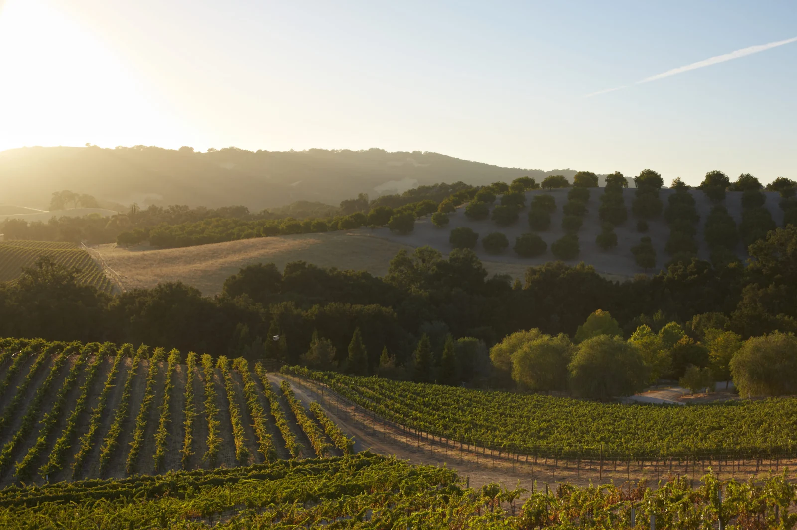

The first weekend of November is one of the best food and wine weekends on the Sonoma County calendar. The 28th annual Wine & Food Affair, run by the Wine Road, takes place Saturday and Sunday, November 7 and 8, 2026, from 11 a.m. to 4 p.m. each day. Dozens of wineries pour their wines alongside a dish made to match, and you move between them at your own pace. Here is how it works, and how to plan the weekend with downtown Santa Rosa as your base.
How the Wine & Food Affair works
When you buy a ticket, you choose a check-in winery. That is where you start: you pick up your tasting glass and wristband there, and after that you can visit the participating wineries in any order. Each winery pours a minimum of three wines and serves a featured food pairing, often a recipe the winery has developed for the event. The Wine Road keeps past pairings in its online recipe collection, which is worth a look if a dish wins you over.
For 2026 the Wine Road lists 43 participating wineries, with more expected. They are spread across the Alexander Valley, Dry Creek Valley, Russian River Valley and the Healdsburg area. A few only take part on one day: Limerick Lane Cellars is Saturday only and Dutcher Crossing is Sunday only, and Sunday-only tickets are also offered. Tickets are sold through CellarPass from the Wine Road's ticket page.
Rules to know before you book
- 21 and over only. Wine Road events do not admit children, babies or minors, and photo ID is required with no exceptions.
- Designated driver tickets are available for drivers 21 or older. They include the food pairings but no wine tasting, and come with a different wristband color.
- Groups of eight or more cannot be accommodated at participating wineries during the event.
- Check-in is capped at 50 check-ins per winery, so popular starting points fill up.
- All sales are final and non-refundable.

Why Santa Rosa works as a base
The participating valleys sit north and west of the city, and the Russian River Valley, Dry Creek Valley and Alexander Valley are each roughly 20 to 30 minutes by car from downtown Santa Rosa. That puts you in reach of every corner of the event without moving hotels, and it leaves Saturday night free for a proper dinner in town rather than a long drive back from somewhere quieter.
It also helps on price. Tasting fees have come down in Sonoma County: the 2026 Silicon Valley Bank direct-to-consumer wine report found the county's average standard tasting fee fell by $7 to $47 in 2025. An event ticket that bundles tastings and food at dozens of wineries is a good way to sample widely in one weekend.
A simple two-day plan
Saturday. Pick a check-in winery in the valley you want to explore most and get there close to 11 a.m., before the cap fills. Stay within one valley for the afternoon. Three or four wineries is plenty when each one pours three wines with food, and the doors close at 4 p.m. Head back to Santa Rosa, rest, then walk to dinner downtown.
Sunday. Switch valleys. If you started in the Russian River Valley, try Dry Creek or Alexander Valley on day two, or use Sunday for the one-day-only wineries. Finish in Healdsburg for a walk around the plaza before the short drive back.
Getting around. Decide on your driver before you buy. A designated driver ticket still includes every food pairing, so the driver gets a real day out too.
Good to know
- Dates: November 7 and 8, 2026, 11 a.m. to 4 p.m. each day.
- Wine Road Insider members get a discount on tickets; details are on the Wine Road site.
- Choose your check-in winery when you buy, and plan your route around it.
Where to stay for the weekend
A downtown base keeps the evenings easy. Hotel E is in a historic building right on Old Courthouse Square, with continental breakfast before you set out and valet parking for the car. Art House Santa Rosa is a few blocks away on 7th Street. Both put the restaurants in our downtown food guide on foot, and our wine country guide covers the valleys for the rest of the year.
Plan your stay downtown
Browse hotels, restaurants, wineries and attractions, all in one place.
Open the directory